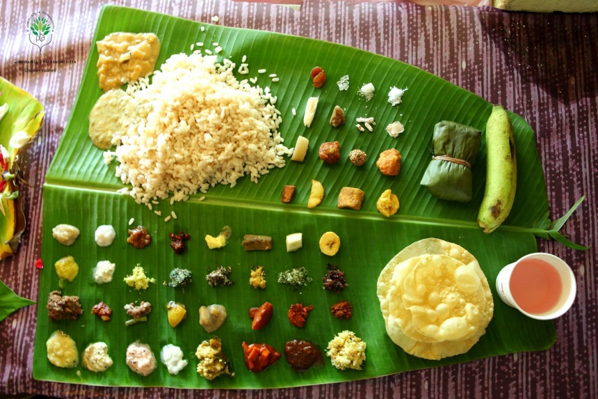
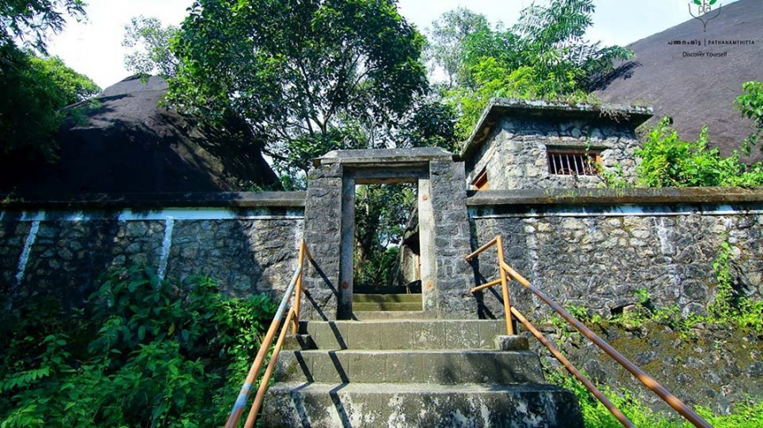
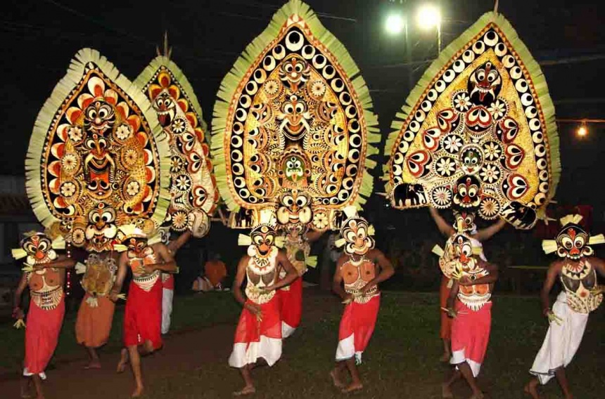
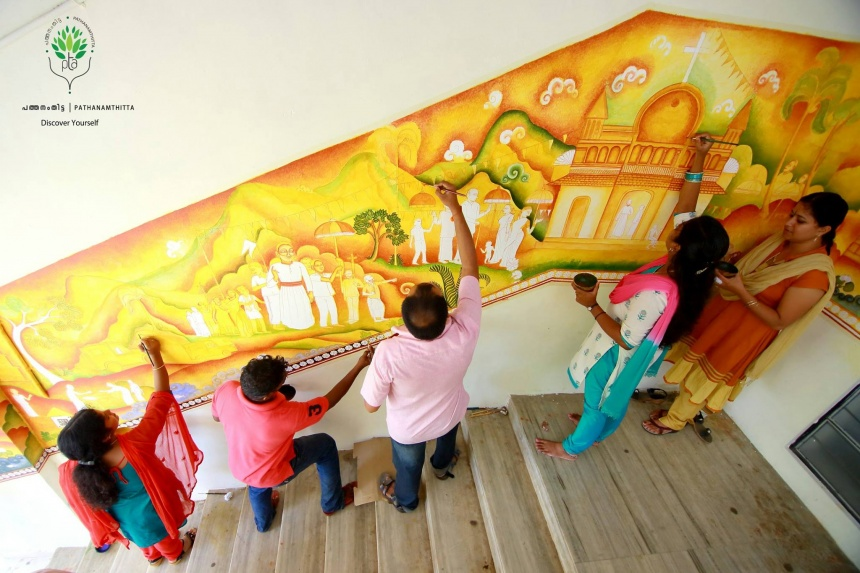
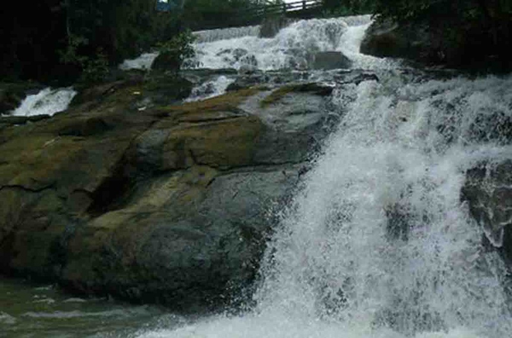

Home
(current)
Explore
Districts
Adventure
Holiday Packages
Cusines
Heritage
The Wild
Reviews
Destination
WaterFalls
Beaches
Museum
Contact Us
Sign In
Search
PATHANAMTHITTA
Pathanamthitta, in southern Kerala, is a town immersed in spirituality and mysticism. Blessed with several ancient temples, it is renowned as headquarters of pilgrimage in Kerala as Sabarimala is situated in the Pathanamthitta district. It is a land of untouched beauty with pristine rivers, lofty mountain ranges and sprawling coconut groves. The region is parted into a fascinating topography of highlands, midlands and lowlands crafted by three rivers coursing in the town. The town of Pathanamthitta is also marked by a culture unique to this place as well as an art of metal mirrors i.e. Aranmula Kannadi, handcrafted with intricacy and poise. The town also practices the art of 'vaasthu vidya' in its purest form at a heritage village of Vassthu Vidya Gurukulam. Bounded by captivating vistas at every step, this bewitching town promise of an experience you never dreamt of.
How to Reach:
Bus
Pathanamthitta is easily approachable through all the major town of Kerala via a well-maintained network of roads. Private buses, as well as KSRTC buses, plies regularly within and outside the town like Kochi, Trivandrum, Mangalore, Coimbatore, Kozhikode and Madurai.
Train
The nearest railway station to Pathanamthitta is Chengannur about 28 km away. Thiruvalla is another option to approach the town via rail which is situated at a distance of 30 km.
Flight
Trivandrum International Airport serves as the nearest airport to Pathanamthitta. It is located nearly 120 km from the town and is well-connected to several major cities of India as well as many the Middle East and South East Asian countries.
Places to Visit
Perunthenaruvi Waterfall:
A natural waterfall with captivating surroundings is situated on the banks of the River Pamba. The fall is 60 to 100 ft deep which pours down on a rocky bed. The place is a favourite picnic spot among locals as well as tourists.
Gavi :
One of the most beautiful places in India, Gavi is a small village tucked between tea estates and wide and dense forests. A unique project in itself, the place is a model of eco-tourism site bringing to the world its spellbinding abundance in flora and fauna.
Thriveni Sangamam:
Situated on the way to Sabarimala, the Thriveni Sanganam as the name suggests is the point where the Holy Pamba River meets with the Manimala River in its north and with the Achankovil River in the south. The devotees stop here to take a dip in the holy water to wash away their sins.
Kaviyoor Mahadeva Temple:
Kaviyoor Mahadeva Temple is an ancient temple located on a small hilltop at Kaviyoor, Pathanamthitta District. Dedicated to Lord Shiva and Goddess Parvati, this temple is one of the most popular and significant Shiva Temple in Kerala.
Things to do
Aranmula Boat Race:
This famous water fiesta is held during Onam (August - September). The snake boats assemble near the Sri Parthasarathy Temple before the grand procession.
Muloor Smarakam:
The memorial to Muloor, a renowned social reformer and poet, is located at Elavumthitta.
Aranmula Kannadi:
Aranmula is also famous for its metal mirrors, a unique craft which is not found anywhere else in the world.
Gallery




